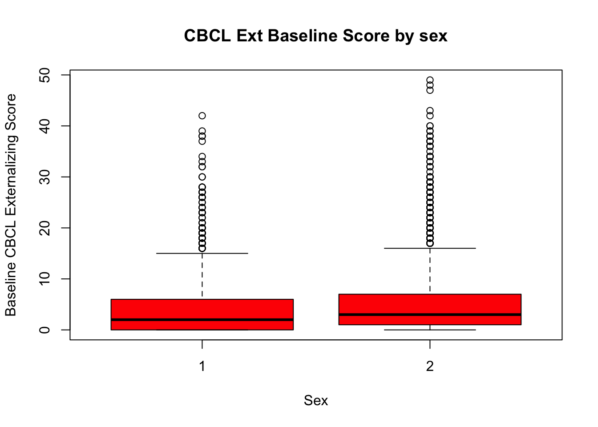
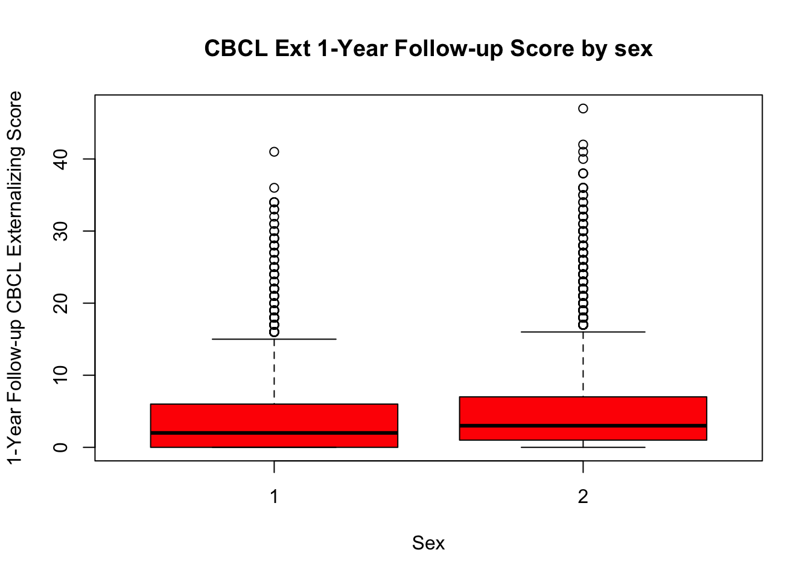
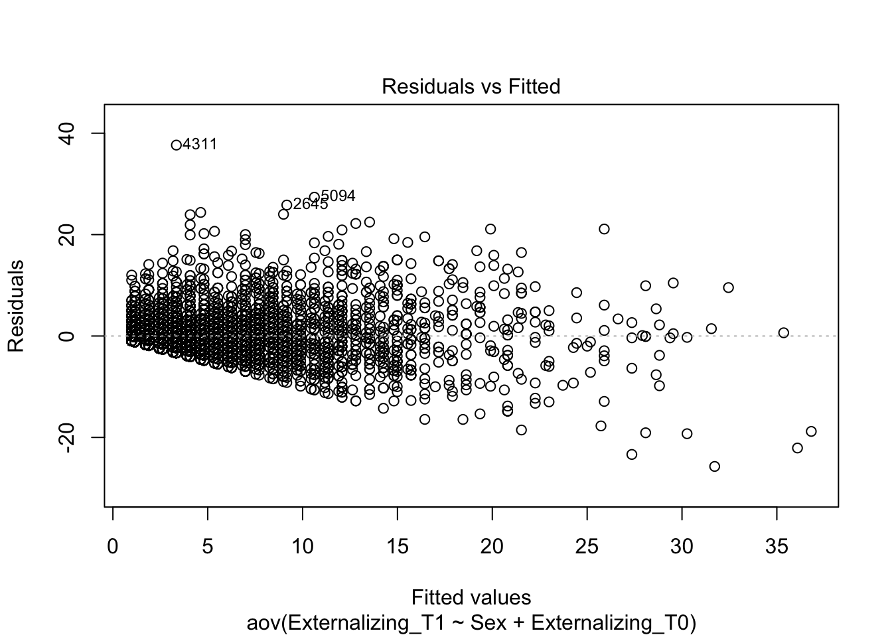
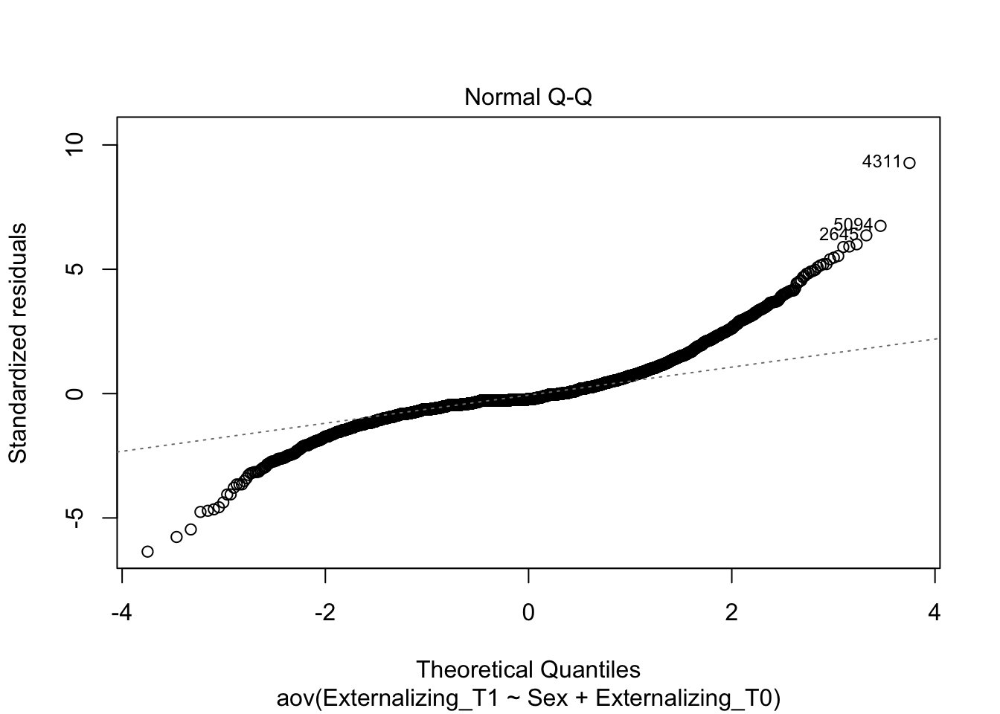
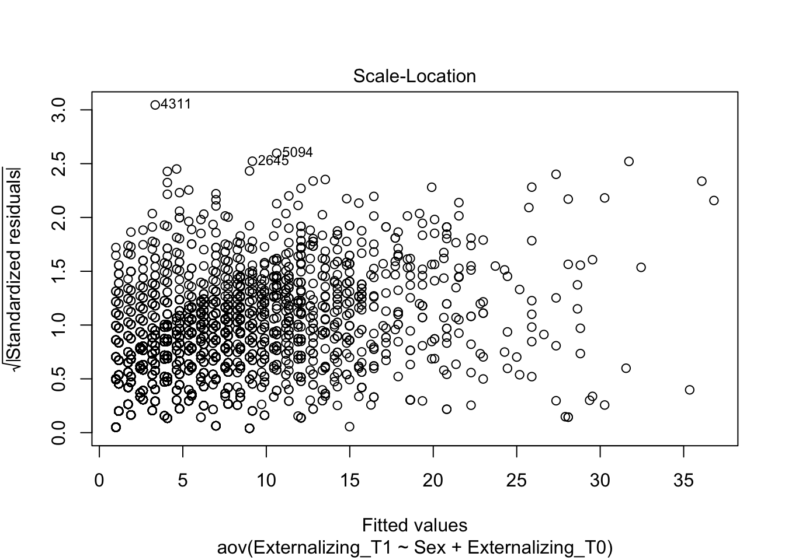
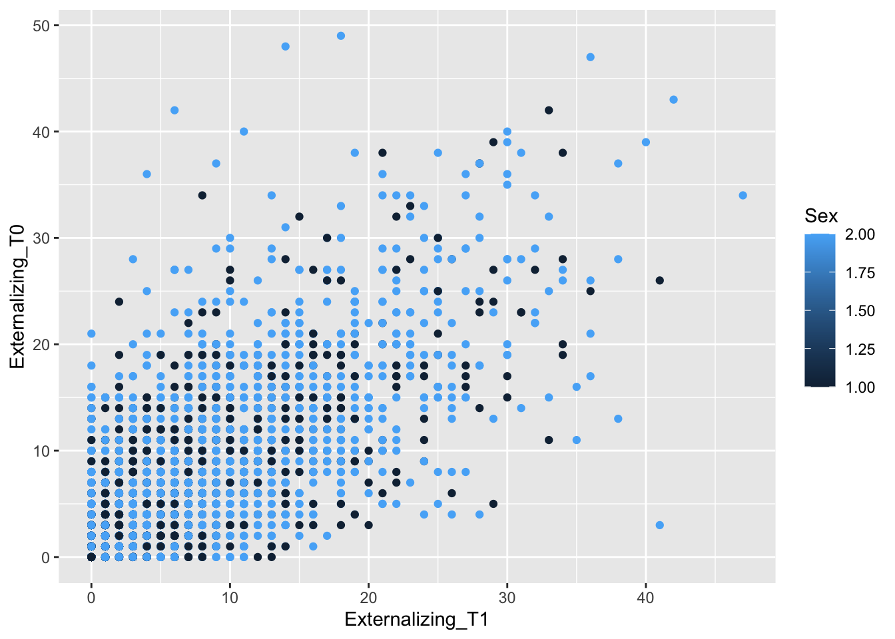
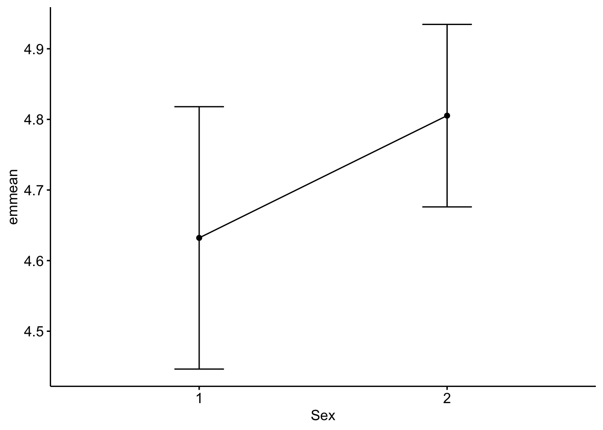

ex1.ancova
df_wide<- read_csv("/Users/shawes/Desktop/df_wide.csv")Rows: 5649 Columns: 27
── Column specification ────────────────────────────────────────────────────────
Delimiter: ","
chr (1): ids
dbl (26): SiteID, FamilyID, Sex, Age, Race_White, Race_Black, Race_Hispanic,...
ℹ Use `spec()` to retrieve the full column specification for this data.
ℹ Specify the column types or set `show_col_types = FALSE` to quiet this message.df_wide %>%
group_by(Sex) %>%
summarise(mean_grade = mean(Externalizing_T0),
sd_grade = sd(Externalizing_T0),
mean_exam = mean(Externalizing_T1),
sd_exam = sd(Externalizing_T1))# A tibble: 2 × 5
Sex mean_grade sd_grade mean_exam sd_exam
<dbl> <dbl> <dbl> <dbl> <dbl>
1 1 NA NA NA NA
2 2 5.30 6.60 NA NA# Boxplot of CBCL Externalizing scores at baseline by sex
boxplot_cbclExt_T1 <- boxplot(Externalizing_T0 ~ Sex,data = df_wide,
main = "CBCL Ext Baseline Score by sex",
xlab = "Sex",ylab = "Baseline CBCL Externalizing Score",
col = "red",border = "black")
# Boxplot of CBCL Externalizing scores at 1-Year follow-up by sex
boxplot_cbclExt_T2 <- boxplot(Externalizing_T1 ~ Sex, data = df_wide,
main = "CBCL Ext 1-Year Follow-up Score by sex",
xlab = "Sex",ylab = "1-Year Follow-up CBCL Externalizing Score",
col = "red",border = "black")
suppressWarnings(print(boxplot_cbclExt_T1))$stats
[,1] [,2]
[1,] 0 0
[2,] 0 1
[3,] 2 3
[4,] 6 7
[5,] 15 16
$n
[1] 1843 3805
$conf
[,1] [,2]
[1,] 1.779176 2.846315
[2,] 2.220824 3.153685
$out
[1] 21 16 19 32 42 32 23 16 19 19 17 18 26 20 20 20 24 28 20 19 18 20 22 16 19
[26] 16 17 34 26 20 17 18 17 16 17 23 18 16 17 24 19 37 30 19 19 18 24 18 16 23
[51] 18 18 16 27 16 38 21 16 18 20 19 25 18 23 27 19 19 26 22 28 17 23 16 28 19
[76] 18 17 26 19 17 17 18 17 16 19 20 23 39 16 27 19 17 28 19 33 19 27 21 27 20
[101] 25 38 30 18 20 28 21 28 34 26 20 18 47 29 24 38 22 19 27 34 25 17 31 32 23
[126] 19 24 23 17 21 21 22 18 30 24 24 34 19 22 28 27 22 39 18 24 21 25 21 27 18
[151] 28 19 19 19 18 19 17 28 22 17 19 29 20 22 19 28 36 17 37 29 21 30 20 18 27
[176] 19 25 26 48 27 18 23 20 23 20 18 49 20 18 19 17 20 17 17 24 21 27 19 18 19
[201] 30 19 19 23 36 28 26 17 25 18 17 26 28 18 18 38 20 23 23 18 19 29 32 17 22
[226] 27 20 19 40 21 20 40 20 19 17 35 29 22 17 21 17 21 23 17 27 26 39 17 18 42
[251] 18 29 22 17 25 18 20 25 36 22 20 37 17 17 18 25 34 29 23 20 17 25 21 19 26
[276] 25 27 24 37 23 33 27 34 21 17 23 18 21 18 25 17 38 26 20 17 17 30 21 25 25
[301] 18 17 34 21 37 18 24 21 19 20 20 29 20 19 20 24 21 27 17 22 17 32 29 17 24
[326] 18 23 27 30 17 24 22 18 18 21 24 20 20 18 27 19 24 27 21 18 18 17 17 17 34
[351] 23 21 20 19 17 19 43 20 19 33 36 21 17 20 19 19 17 18 18 17 21 30 19
$group
[1] 1 1 1 1 1 1 1 1 1 1 1 1 1 1 1 1 1 1 1 1 1 1 1 1 1 1 1 1 1 1 1 1 1 1 1 1 1
[38] 1 1 1 1 1 1 1 1 1 1 1 1 1 1 1 1 1 1 1 1 1 1 1 1 1 1 1 1 1 1 1 1 1 1 1 1 1
[75] 1 1 1 1 1 1 1 1 1 1 1 1 1 1 1 1 1 1 1 1 1 1 1 1 1 1 1 1 1 2 2 2 2 2 2 2 2
[112] 2 2 2 2 2 2 2 2 2 2 2 2 2 2 2 2 2 2 2 2 2 2 2 2 2 2 2 2 2 2 2 2 2 2 2 2 2
[149] 2 2 2 2 2 2 2 2 2 2 2 2 2 2 2 2 2 2 2 2 2 2 2 2 2 2 2 2 2 2 2 2 2 2 2 2 2
[186] 2 2 2 2 2 2 2 2 2 2 2 2 2 2 2 2 2 2 2 2 2 2 2 2 2 2 2 2 2 2 2 2 2 2 2 2 2
[223] 2 2 2 2 2 2 2 2 2 2 2 2 2 2 2 2 2 2 2 2 2 2 2 2 2 2 2 2 2 2 2 2 2 2 2 2 2
[260] 2 2 2 2 2 2 2 2 2 2 2 2 2 2 2 2 2 2 2 2 2 2 2 2 2 2 2 2 2 2 2 2 2 2 2 2 2
[297] 2 2 2 2 2 2 2 2 2 2 2 2 2 2 2 2 2 2 2 2 2 2 2 2 2 2 2 2 2 2 2 2 2 2 2 2 2
[334] 2 2 2 2 2 2 2 2 2 2 2 2 2 2 2 2 2 2 2 2 2 2 2 2 2 2 2 2 2 2 2 2 2 2 2 2 2
[371] 2 2 2
$names
[1] "1" "2"suppressWarnings(print(boxplot_cbclExt_T2))$stats
[,1] [,2]
[1,] 0 0
[2,] 0 1
[3,] 2 3
[4,] 6 7
[5,] 15 16
$n
[1] 1841 3797
$conf
[,1] [,2]
[1,] 1.779056 2.846153
[2,] 2.220944 3.153847
$out
[1] 25 21 16 25 18 22 19 33 26 22 30 16 16 17 19 34 17 17 21 29 26 21 18 16 21
[26] 34 21 17 16 18 22 22 16 20 20 16 22 27 18 16 28 22 18 17 28 20 17 17 24 17
[51] 18 24 19 27 31 18 20 24 24 22 16 16 19 21 17 19 22 17 25 28 18 41 18 19 18
[76] 31 19 23 18 24 18 19 22 19 17 25 30 27 28 16 29 29 32 17 34 16 18 23 16 29
[101] 16 16 16 36 34 25 33 22 25 27 25 21 34 23 21 36 22 22 19 17 19 20 23 21 27
[126] 23 25 25 25 23 18 17 18 18 24 24 17 29 32 18 32 38 22 28 40 19 25 22 19 17
[151] 22 19 24 26 18 19 30 26 22 19 25 24 19 27 26 27 20 28 27 20 17 17 18 18 21
[176] 17 28 21 36 21 29 23 27 18 21 26 20 21 17 34 23 18 26 17 30 18 19 32 30 30
[201] 19 19 18 25 21 17 20 31 35 17 31 23 19 28 18 25 33 21 32 24 18 31 23 30 18
[226] 17 30 17 25 30 32 21 18 17 35 18 22 20 18 21 30 26 21 18 17 19 18 26 22 17
[251] 33 19 23 17 24 21 27 25 26 23 25 17 19 17 19 19 20 19 28 33 18 47 36 28 22
[276] 24 25 30 18 25 18 22 38 20 17 22 17 24 19 19 41 28 25 23 18 22 20 21 24 18
[301] 19 20 25 18 17 27 21 18 20 19 17 21 24 28 20 19 21 36 27 22 26 18 17 25 25
[326] 38 26 42 22 20 21 17 23 24 21 20 22 18 17 22 30 21 17 24 17 17 25 17 23 28
[351] 18
$group
[1] 1 1 1 1 1 1 1 1 1 1 1 1 1 1 1 1 1 1 1 1 1 1 1 1 1 1 1 1 1 1 1 1 1 1 1 1 1
[38] 1 1 1 1 1 1 1 1 1 1 1 1 1 1 1 1 1 1 1 1 1 1 1 1 1 1 1 1 1 1 1 1 1 1 1 1 1
[75] 1 1 1 1 1 1 1 1 1 1 1 1 1 1 1 1 1 1 1 1 1 1 1 1 1 1 1 1 1 1 1 1 1 2 2 2 2
[112] 2 2 2 2 2 2 2 2 2 2 2 2 2 2 2 2 2 2 2 2 2 2 2 2 2 2 2 2 2 2 2 2 2 2 2 2 2
[149] 2 2 2 2 2 2 2 2 2 2 2 2 2 2 2 2 2 2 2 2 2 2 2 2 2 2 2 2 2 2 2 2 2 2 2 2 2
[186] 2 2 2 2 2 2 2 2 2 2 2 2 2 2 2 2 2 2 2 2 2 2 2 2 2 2 2 2 2 2 2 2 2 2 2 2 2
[223] 2 2 2 2 2 2 2 2 2 2 2 2 2 2 2 2 2 2 2 2 2 2 2 2 2 2 2 2 2 2 2 2 2 2 2 2 2
[260] 2 2 2 2 2 2 2 2 2 2 2 2 2 2 2 2 2 2 2 2 2 2 2 2 2 2 2 2 2 2 2 2 2 2 2 2 2
[297] 2 2 2 2 2 2 2 2 2 2 2 2 2 2 2 2 2 2 2 2 2 2 2 2 2 2 2 2 2 2 2 2 2 2 2 2 2
[334] 2 2 2 2 2 2 2 2 2 2 2 2 2 2 2 2 2 2
$names
[1] "1" "2"#An ANCOVA approach can be used to examine effects of a categorical covariate when controlling for autoregressive effects (t1->t2)
#Fit ANCOVA Model
ancova_result <- aov(Externalizing_T1 ~ Sex + Externalizing_T0, data = df_wide)
Anova(ancova_result, type="III")Anova Table (Type III tests)
Response: Externalizing_T1
Sum Sq Df F value Pr(>F)
(Intercept) 267 1 16.2238 5.702e-05 ***
Sex 37 1 2.2445 0.1341
Externalizing_T0 120429 1 7305.6740 < 2.2e-16 ***
Residuals 92872 5634
---
Signif. codes: 0 '***' 0.001 '**' 0.01 '*' 0.05 '.' 0.1 ' ' 1#Diagnostic Plots
# residuals vs. fitted values plot.
resid_plot<- plot(ancova_result, add.smooth = FALSE, which = 1)
# normal probability plot
norm_plot<- plot(ancova_result, which = 2)
# scale location plot
scale_plot<- plot(ancova_result, add.smooth = FALSE, which = 3)
# boxplot
boxplot <- ggplot(df_wide, aes(x = Externalizing_T1, y = Externalizing_T0, colour = Sex)) + geom_point()
suppressWarnings(print(resid_plot))NULLsuppressWarnings(print(norm_plot))NULLsuppressWarnings(print(scale_plot))NULLsuppressWarnings(print(boxplot))
#Post-hoc test
# Pairwise comparisons
pwc <- df_wide %>%
emmeans_test(
Externalizing_T1 ~ Sex, covariate = Externalizing_T0,
p.adjust.method = "bonferroni"
)
pwc# A tibble: 1 × 9
term .y. group1 group2 df stati…¹ p p.adj p.adj…²
* <chr> <chr> <chr> <chr> <dbl> <dbl> <dbl> <dbl> <chr>
1 Externalizing_T0*Sex External… 1 2 5634 -1.50 0.134 0.134 ns
# … with abbreviated variable names ¹statistic, ²p.adj.signif# Display the adjusted means of each group (i.e., estimated marginal means)
get_emmeans(pwc)# A tibble: 2 × 8
Externalizing_T0 Sex emmean se df conf.low conf.high method
<dbl> <fct> <dbl> <dbl> <dbl> <dbl> <dbl> <chr>
1 5.01 1 4.63 0.0948 5634 4.45 4.82 Emmeans test
2 5.01 2 4.81 0.0659 5634 4.68 4.93 Emmeans test# Visualization: line plots with p-values
pwc <- pwc %>% add_xy_position(x = "Sex", fun = "mean_se")
ggline(get_emmeans(pwc), x = "Sex", y = "emmean") +
geom_errorbar(aes(ymin = conf.low, ymax = conf.high), width = 0.2) +
stat_pvalue_manual(pwc, hide.ns = TRUE, tip.length = FALSE) #+
# labs(
# subtitle = get_test_label(pwc, detailed = TRUE),
# caption = get_pwc_label(pwc)
# )